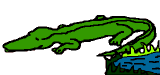
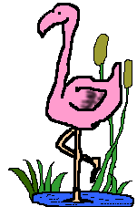
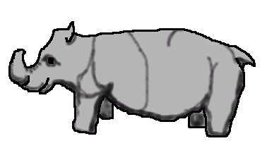

This is an alligator. They have a lot of teeth and spend most of the time in the water.
Don't go near these big creatures. They rumble RRRRRR.....RRRRRRR!

This is the flamingo. It is a big beautiful bird.
They are very noisy and go SQUAK...SQUAK...!

This is the rhino. He is a big animal and has a horn on his head.
They go snort, snort